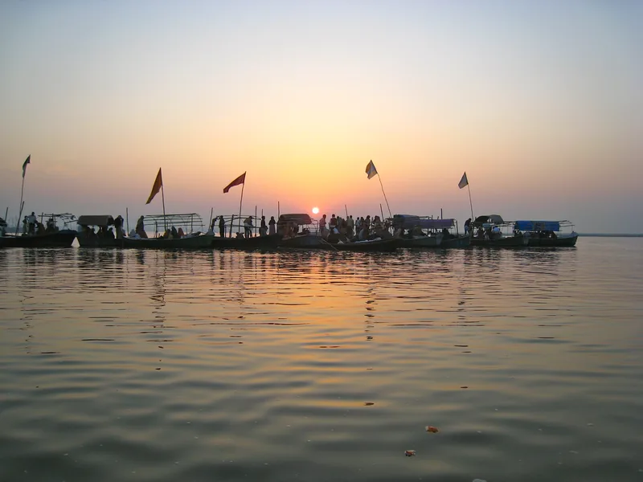

Home / Blog / Ayodhya Prayagraj Varanasi Tour Package

The Ayodhya Prayagraj Varanasi tour package is the classic North-Indian pilgrimage trinity — Lord Ram's Ayodhya, the holy Triveni Sangam at Prayagraj, and Lord Shiva's Kashi. Five days is the sweet spot to cover all three without rushing.
The route & logistics
The natural order is Ayodhya → Prayagraj → Varanasi, flowing south then east. Total road distance is around 450 km, comfortably split across the days in a private AC vehicle. Most pilgrims fly or train into Lucknow, Ayodhya or Varanasi and we handle the rest. For specific Kashi bookings, we highly recommend planning your stay and transport via Kashi Dharshan Yatra.
5-day day-by-day plan
- Day 1 — Arrive Ayodhya; evening Saryu Aarti.
- Day 2 — Ram Janmabhoomi, Hanuman Garhi, Kanak Bhawan; overnight Ayodhya.
- Day 3 — Drive to Prayagraj; boat to the Triveni Sangam for a holy dip; Bade Hanuman & Akshayavat.
- Day 4 — Drive to Varanasi; Kashi Vishwanath darshan; evening Ganga Aarti.
- Day 5 — Sunrise boat ride on the Ganga; optional Sarnath; departure.
The Triveni Sangam
At Prayagraj, the Ganga, Yamuna and the unseen Saraswati meet. A short boat ride takes you to the Sangam for a sacred snan — the spiritual high point of the trinity yatra, and the site of the great Kumbh Mela.
Kumbh note: During Kumbh and Magh Mela, Prayagraj is extraordinary but extremely crowded. We arrange special logistics and stays for these dates — book months in advance.
Cost
A 5-day Ayodhya–Prayagraj–Varanasi tour package starts around ₹17,500 per person, all-inclusive of stays, travel, guide and darshan assistance.
Frequently asked questions
How many days for Ayodhya, Prayagraj and Varanasi?
5 days / 4 nights is ideal for an unhurried trinity yatra.
Is the Sangam boat dip safe for elders?
Yes — we use trusted boatmen and assist seniors at every step; wheelchair help is available where needed.
What does the package cost?
From about ₹17,500 per person, depending on hotel category, group size and season.
Ready to go?
Let us plan this yatra for you
Share your dates and group — we'll send a tailored itinerary and quote, with no obligation.